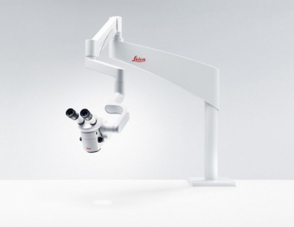
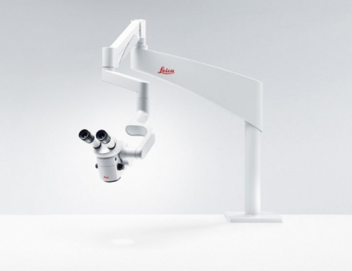

Микроскоп Leica M320
 

В нашей клинике применяется дентальный микроскоп Leica M320 Hi-End (Германия), один из лучших существующих микроскопов в мире. Он отлично освещает рабочее поле врача-стоматолога и, благодаря возможности сорокакратного увеличения, позволяет провести лечение с высокой точностью.
Стоматологический микроскоп Leica M320 HiEnd позволяет:
- Диагностировать кариес на раннем этапе, следовательно, вылечить его минимально травматично;
- Диагностировать рецидивы кариеса, неплотно прилегающие участки старых пломб, трещины в коронковой части зуба;
- Тщательно обрабатывать кариозные полости, удаляя пораженные ткани и не травмируя здоровые;
- Извлекать штифты, культевые вкладки и инородные тела (фрагменты инструментов) из корневых каналов;
- Проводить очистку и расширение корневых каналов при пульпитах;
- Проводить повторное лечение корневых каналов при периодонтитах;
- С выcокой эстетикой проводить реставрацию зубов композитными материалами;
- Осуществлять микрохирургические манипуляции в пародонтологии;
- Проводить чистку десневых карманов;
- Проводить фотофиксацию этапов и результатов работы, что помогает использовать полученные данные в целях обучения и совершенствования качества лечения, а также, при необходимости, демонстрировать результаты пациенту.
Использование дентального микроскопа позволяет вам получить более качественный результат лечения зубов.
Высокоточное оптическое увеличение микроскопа Leica открывает гораздо большие возможности, чем при традиционном подходе. Например, с микроскопом врач более точно производит удаление зараженных тканей и максимально сохраняет здоровые; он видит все каналы зуба, все изгибы и разветвления, не доступные простому зрению. Микроскоп позволяет точнее и с большей тщательностью провести обработку и пломбирование каналов. Пломба фиксируется максимально плотно, что исключает появление зазоров и снижает вероятность развития вторичного кариеса. Лечение под стоматологическим микроскопом в ряде случаев помогает спасти зубы, которые невозможно спасти при традиционном методе.
Высокая точность при проведении манипуляций, возможность детального исследования внутренних структур зуба, выбор правильной тактики и контроль всех этапов повышает срок службы реставраций, выполненных под микроскопом.
Микроскоп Leica позволяет вывести изображение на монитор. Таким образом за манипуляциями врача можно наблюдать со стороны. Это особенно важно в сложных случаях, когда требуется консультация врачей других специализаций.
{kind=link}
Стоматологическое лечение под микроскопом – это относительно новый стандарт. Передовое, высокотехнологичное оборудование предъявляет особые требования к работающим на нём специалистам. Врачи-стоматологи DLclinic, владеющие техникой лечения десен и зубов с микроскопом, прошли специальное обучение в Санкт-Петербурге и имеют необходимый опыт для профессионального взаимодействия с пациентами. Обращаясь к нам, вы можете быть уверены, что устранение возникшей проблемы происходит с учетом современных технологий, существенно улучшающих качество процедур, которые могут вам понадобиться в процессе лечения.